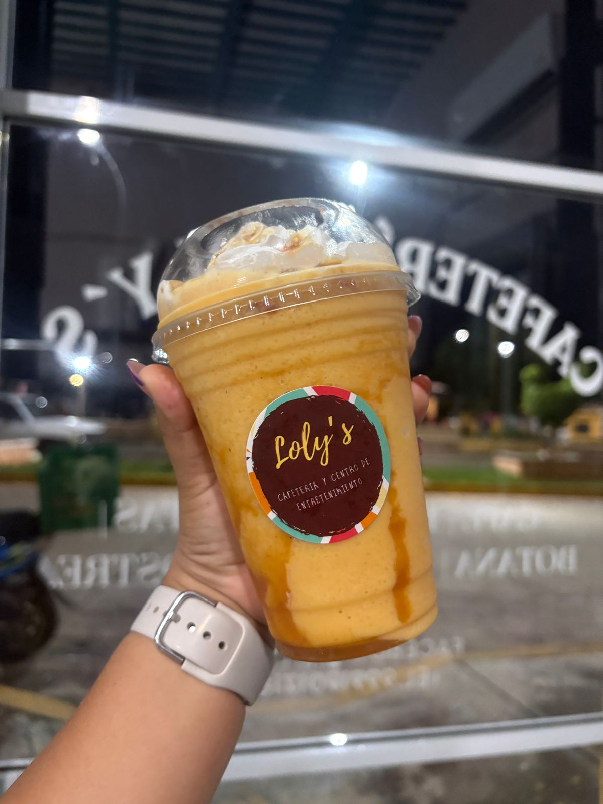
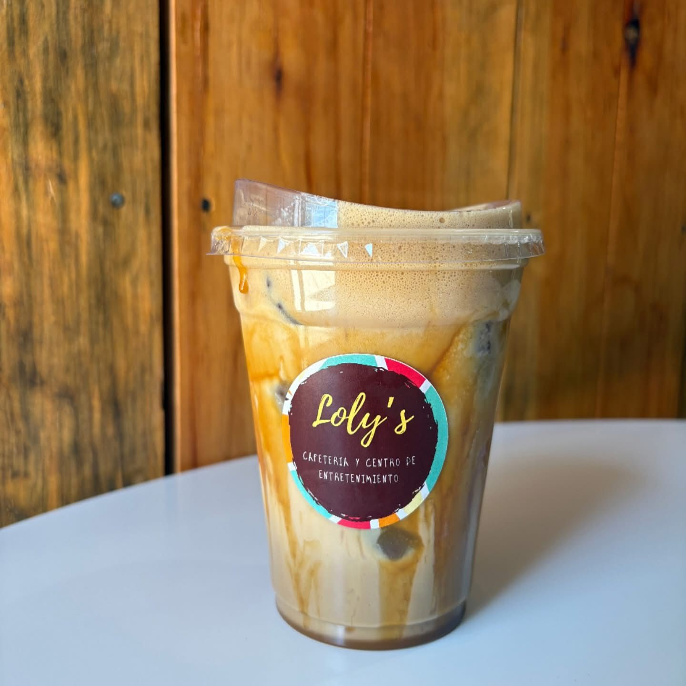
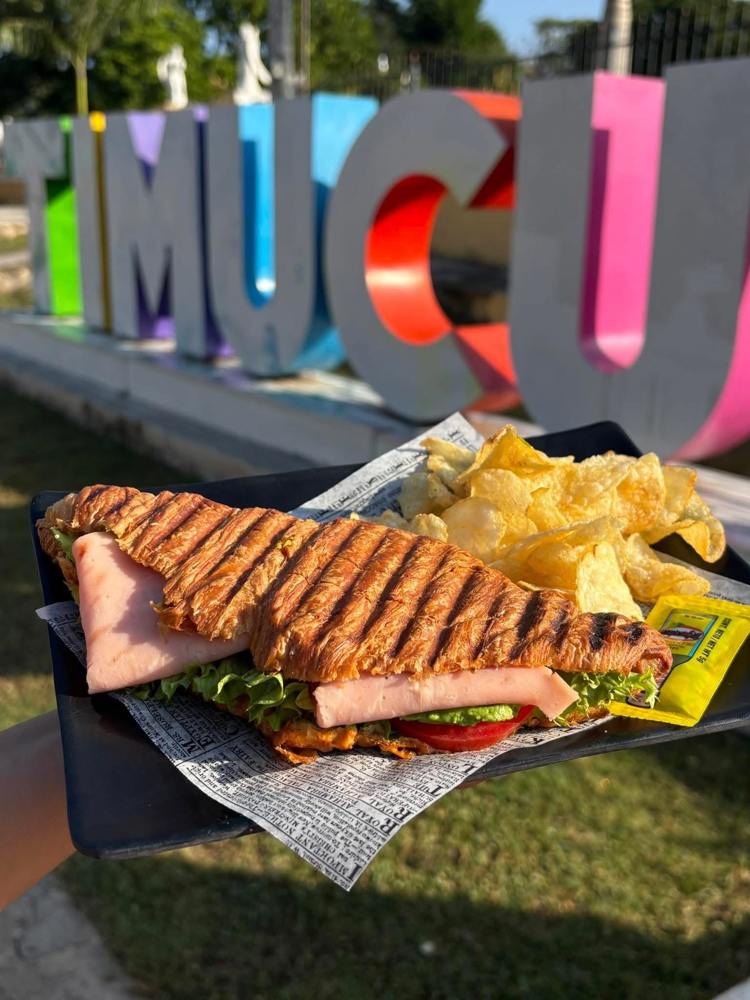
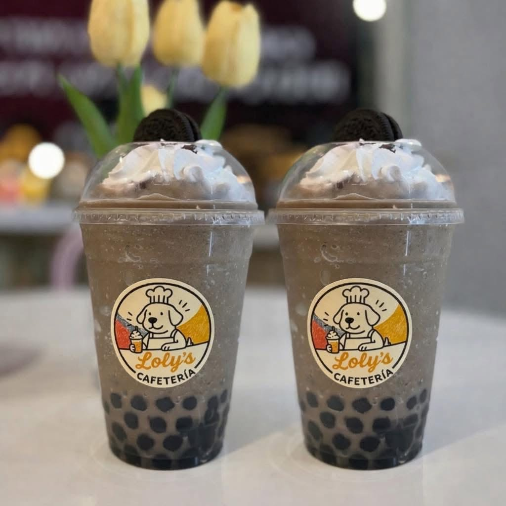

Crear un espacio acogedor donde cada persona se sienta como en casa, compartiendo café y alimentos preparados con calidad, mientras vive momentos de convivencia, tranquilidad y conexión. En Loly’s creemos que una taza de café es el inicio de una conversación, una celebración, una idea o un recuerdo que permanecerá para siempre. Por eso servimos cada platillo con respeto, honestidad y un servicio cercano que haga sentir bien a quienes nos visitan.
Ser una de las cafeterías más queridas y reconocidas por su calidez, calidad y servicio, llevando la esencia de Loly’s a nuevos lugares sin perder lo que nos hace únicos: hacer que cada persona se sienta en casa. Queremos crecer generando oportunidades para nuestra comunidad, especialmente para jóvenes y estudiantes, y convertirnos en ese lugar al que las personas regresen para estudiar, trabajar, celebrar, conversar y crear recuerdos que las acompañen toda la vida.
📍 Calle Principal, Timucuy, Yucatán, México.